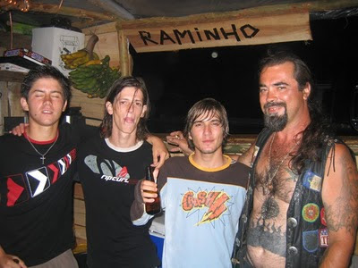

Por vezes nem a memória perdura
{kind=link}

As enxurradas de Dezembro último na Agualva levaram consigo esta foto junto com as outras que o Hélio tinha em casa, expostas nas paredes da garagem. Uma mudança de gerência de um café nas Velas arrancou o meu poema da parede desse mesmo estabelecimento. Não sei por onde param os poemas de amor que ofereci, não fiquei com duplicados. Não sei onde guardei os meus primeiros poemas, que datam de dois mil e poucos. Às vezes vêm-me à memória pedaços disso tudo."Confio no destino
Que o Universo nos confia..."
acho que escrevi isto. mas já não tenho a certeza.
Eu também tenho um monte de coisas guardadas, e tenho a certeza que mais ninguém tem, nem tu....
que o universo nos confia
creio na sorte e
na mais pura magia
e sou assim porque te conheci
porque quando paro penso em ti
descubro o brilho do teu olhar
e se o destino me dá isto tudo
e o universo me faz tão sortudo
nao me canso de confiar ( duas palavras que nao percebo).
por aqui as memorias continuam guardadas.